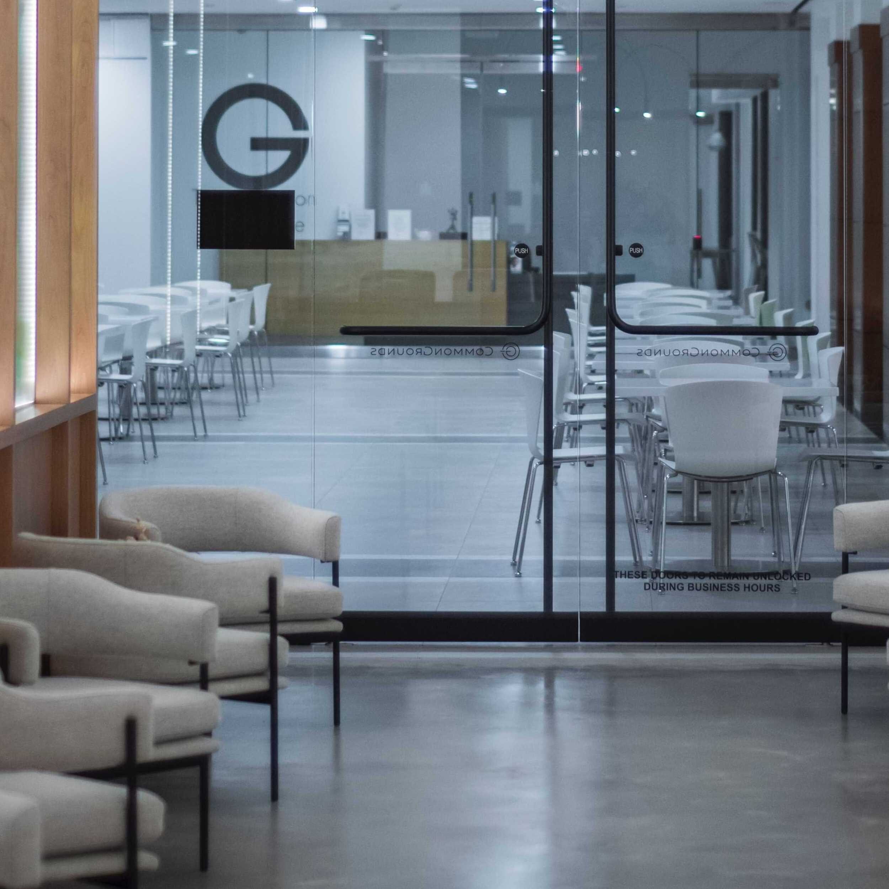

Nosotros
La salud como concepto actual destaca la armonía entre los aspectos físico, emocional, intelectual y de la persona con el entorno.
Vivimos un tiempo en el cual las múltiples ocupaciones, y el intenso uso de la tecnología vinculada al mundo laboral y de las relaciones humanas nos enfrenta al desafío cotidiano de buscar una mejor calidad de vida, donde la salud de las personas requiere, cada vez más, ser abordada desde una perspectiva integral y adecuada a la demanda de esta realidad.
Queremos brindar una atención médica de excelencia, otorgada por un grupo de profesionales de la salud que funcionen como equipo, centrada en lo humano, en el respeto del tiempo de cada paciente, con la accesibilidad y contención necesarias para que esto se cumpla, enfocados en la familia y en la comunidad de la que somos parte.
Contamos con una area exclusiva de cardiologia, donde atendemos a los pacientes con diversas afecciones cardiacas y vasculares, para brindar un aboraje integrado, tanto desde la prevencion, diagnostico, tratamiento, seguimiento y rehabilitacion de las patologias cardivoasculares mas prevalentes en nuestro medio.
Nuestras especialidades médicas están lideradas por profesionales de reconocida formación y experiencia en nuestro medio y que viven el trabajo en equipo interdisciplinario y la actualización continua como única forma de brindar una adecuada calidad de atención médica.
En CURETA CLINIC buscamos generar un vínculo de cercanía con el paciente preocupándonos no sólo de la eficiente resolución o contención de su problema de salud, sino que también de la prevención y promoción de la misma.
Ubicación

Ubicado en Buenos Aires, Cordoba y Santa Fe fue diseñado para brindar un servicio de calidad y confort a las personas.
Construido a partir de formas simples y puras que le posibilitan integrarse al entorno urbanístico tradicional y a la naturaleza del lugar en el que está emplazado, pero comunicando a través de su arquitectura modernidad y firmeza.
Cuenta con dos plantas con tres recepciónes , sala de espera zonificada, consultorios equipados para cada especialidad, un area exlcusiva de cardiologia y metodos no invasivos, laboratorio de análisis clínicos, área de diagnóstico por imágenes.
Sector de sanitarios público, aislado de los espacios comunes del centro médico, con baño independiente para personas con discapacidad.
Rampas de acceso para personas con movilidad reducida y rampas sanitarias diseñadas para facilitar la circulación de sillas de ruedas y camillas, con ascensor camillero.
Cuenta también con estacionamiento propio a metros de nuestro centro medico.
Los espacios de CURETA CLINIC cuentan con iluminación natural y tecnología de iluminación de led en su totalidad para minimizar el consumo energético.
El edificio ha sido diseñado con los mas altos estandares de la arquitectura hospitalaria.
Sistema de atención
Nuestra atención está centrada en el bienestar de nuestros pacientes en un concepto amplio e integral.
Nuestro sistema de gestión de turnos ofrece flexibilidad a nuestros pacientes. Pueden programar citas tanto por teléfono como de forma online, lo que les permite elegir la opción más conveniente para ellos.
Hemos incorporado una completa historia clínica electrónica disponible en línea. Esto garantiza un acceso rápido y seguro a los registros médicos de nuestros pacientes, lo que facilita una atención más precisa y personalizada.
Para brindar una experiencia más eficiente, hemos habilitado terminales de autogestión en nuestras instalaciones. Esto permite a los pacientes realizar trámites y consultas sin necesidad de esperar en largas filas, agilizando la atención administrativa.
Nuestro sistema de gestión no solo beneficia a nuestros pacientes, sino que también mejora la eficiencia de nuestro personal médico y administrativo.
En resumen, nuestro sistema de atención médica está diseñado para brindar una experiencia integral, eficiente y respetuosa del tiempo de nuestros pacientes.
Utilizamos tecnología de vanguardia para garantizar que cada visita sea lo más cómoda y efectiva posible, tanto en términos médicos como administrativos.